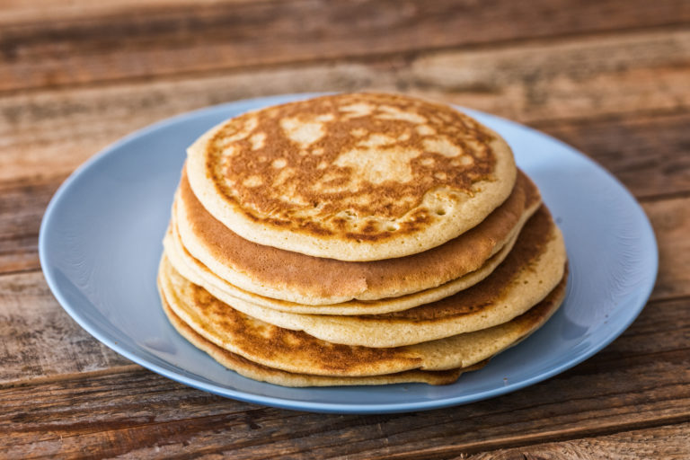

To Homepage
Home-made Pancakes

Description
Instead of using pre-made pancake mix, consider having these household items on hand for this breakfast classic.
Ingredients
- Flour; 1 1/2 cups
- Baking Powder; 3 1/2 teaspoons
- White sugar; 1 tablespoon
- Milk; 1 1/4 cups
- Melted Butter; 3 tablespoons
- 1 Egg
Steps
- Place all dry ingredients into a large mixing bowl and mix them together until even.
- Add all wet ingredients to the mixing bowl, mixing until the solids and liquids have
completely combined. There should be no remaining solid clumps left stuck to the bowl.
- Heat a pan on the stovetop at a low-medium heat.
- Using a pat of butter (use more that you didn't add to the mixing bowl), melt it in
the heated pan to prevent your pancake batter from sticking to the pan.
- Into the pan, pour batter from the bowl in the size of a single pancake. It should be
slightly bigger than the area covered by your spatula.
- The pancake will be ready to flip when you see bubbles begin to rise in the heating batter.
Takes about 3-5 minutes, but you may also gently check the underside as you see fit.
- Flip pancake, and allow to cook on this side for another 3 minutes or so.
- You have finished cooking a pancake! Transfer it from the pan to a serving plate.
- Repeat from step 4 onward until you have run out of pancake batter
NOTE: If you would like to add spices, such as cinnamon or nutmeg, add
them with the dry ingredients in step 1. If you would like to add extra
ingredients, such as mashed bananas or chocolate chips, add them with the wet ingredients
in step 2. Or, you could add them to the batter after having mixed
the basic dry and wet ingredients, I'm not even sure how much it matters.